最新消息
公司動態、活動與演講，共 31 篇。

Ai3榮獲2026 ASOCIO國際大獎
深耕Agentic AI與人機協作 樹立未來數位勞動力新典範

Ai3獲全台首張ISO/IEC 42001認證 打造治理內建AI客服新標準
AI治理正式從制度管理走向平台治理，打造治理內建AI客服新標準

從《造山者》到資訊服務的領航者：Ai3 的人工智能願景
與夥伴及同仁共同呼應『造山者精神』

Ai3 榮獲第七屆品牌金舶獎
以 AI 技術重新定義服務價值 驅動產業數位轉型

2025卓越登峰大賞：Ai3打造客服革命，以科技創新書寫AI未來
在這個生成式AI快速崛起的時代，企業數位轉型不再只是潮流口號，而是攸關競爭力存續的核心命題。

生成式AI助力中小企業數位轉型，張榮貴董事長分享成功經驗
張榮貴董事長於彰化縣中小企業協會演講，強調生成式AI在企業創新與轉型中的關鍵作用，展示實際應用案例，助力中小企業數位轉型

AI驅動、軟硬共融論壇 探討大語言模型與應用趨勢
在經濟部產業發展署指導下，AI驅動、軟硬共融論壇圓滿落幕，深入探討歐盟AI法規與大語言模型技術，吸引近300人參與，共同推動AI應用的新動能
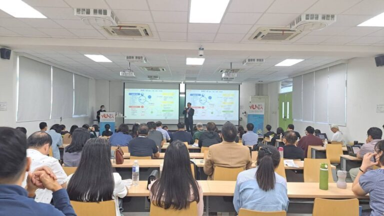
2023 PMI台灣專案管理國際論壇
張榮貴董事長在頒獎典禮上分享「AI2.0數位轉型與客服再進化」
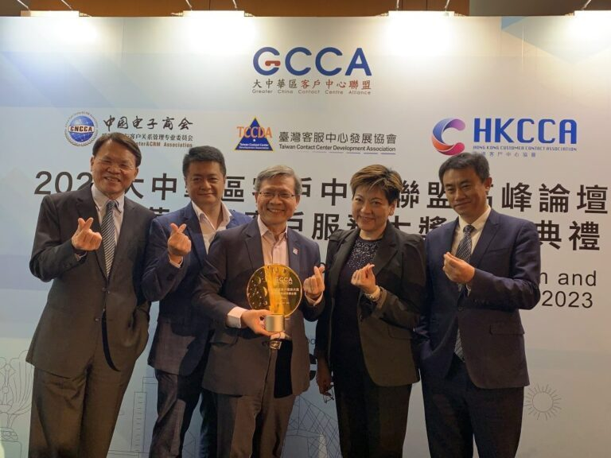
【快訊】工研院號召智囊團獻策
AI2.0數位轉型與客服再進化

台北市中小企業知識學苑演講
8/31 張榮貴董事長受邀至台北市中小企業知識學苑演講

第27屆行動計算、第18屆無限隨侍及感測網路研討會
張榮貴董事長發表演講

「ChatGPT浪潮來襲：客戶服務再進化」
Ai3 於 8 月 23 日舉辦「ChatGPT浪潮來襲：客戶服務再進化」產品發表會
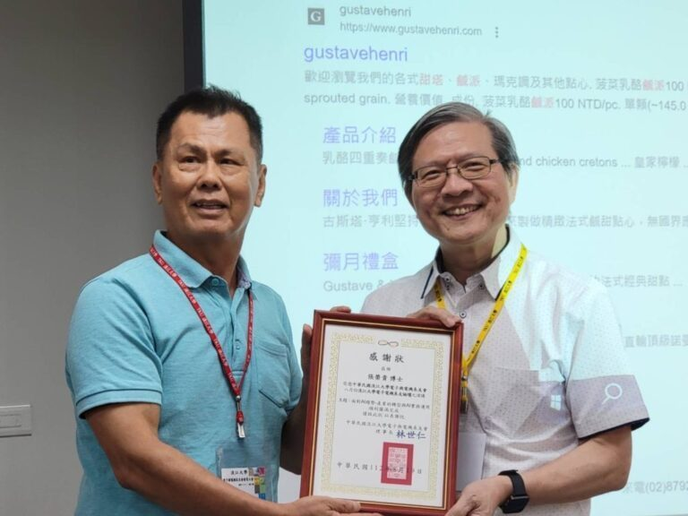
淡江大學電機系論壇發表Ai3 co.張榮貴董事長受邀演講
淡江大學電機系 8 月 18 日論壇，張榮貴董事長受邀分享
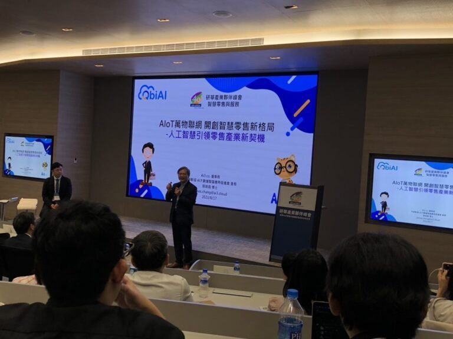
研華產業夥伴峰會-Ai3 張榮貴董事長演講
研華 40 週年產業夥伴高峰會，張榮貴董事長受邀演講
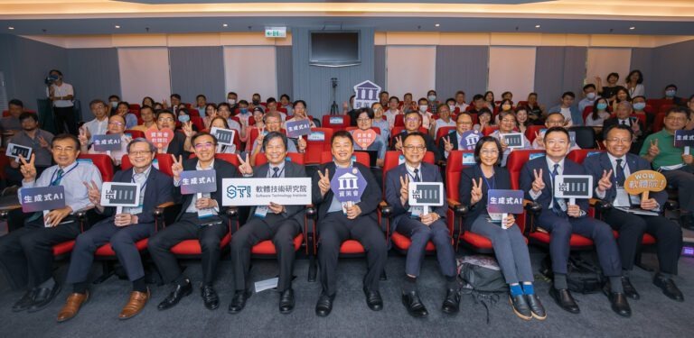
資策會與產學研合作成立AI 133 LAB
資策會與產學研合作成立 AI 133 LAB，現場展示多項生成式 AI 核心技術
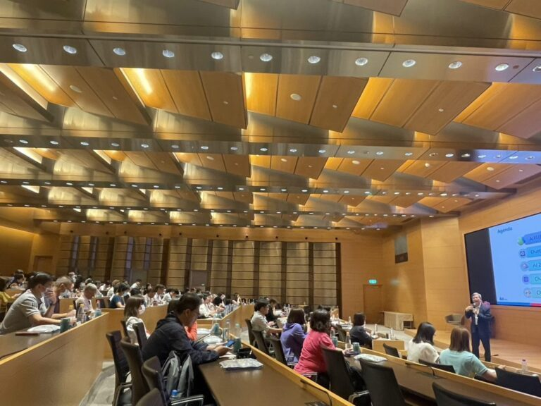
財政部第59次全國賦稅會報-張榮貴董事長受邀分享
張榮貴董事長受邀分享「從AI科技趨勢看ChatGPT的應用與影響」
大咖開講Live! 『面對AI趨勢 產業的轉型與AI實務運用』
ChatGPT 應用社群 7/3 直播活動，張榮貴董事長受邀分享
「ChatGPT、生成式AI來臨的AI 2.0世代」專欄文章
AI 2.0 世代來臨，該注意什麼？張榮貴董事長專欄分享

永續思維下的數位轉型-中小企業運用AI結合淨零碳排
「2023永續思維下的數位轉型｜中小企業運用AI結合淨零碳排」論壇

從AI科技趨勢看Chat GPT對我們的影響
張榮貴董事長將近期 AI 科技趨勢回淡江分享給師長及同學

『從AI科技趨勢看ChatGPT對產業的衝擊與影響』
中華經營智慧分享協會傳智大講堂，張榮貴董事長受邀擔任講師
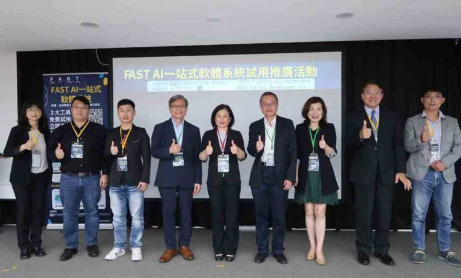
「FAST AI一站式軟體系統」試用推廣說明會
台北市 digiBlock C 數位創新基地舉辦「FAST AI一站式軟體系統」試用推廣說明會
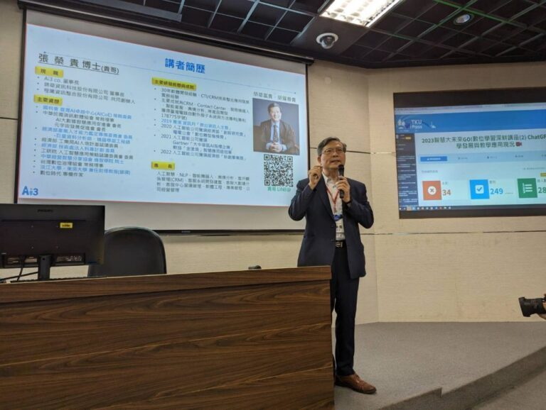
智慧大未來GO！數位學習深耕講座-張榮貴董事長受邀分享
淡江大學遠距教學發展中心講座，邀請校友張榮貴董事長分享 ChatGPT 趨勢
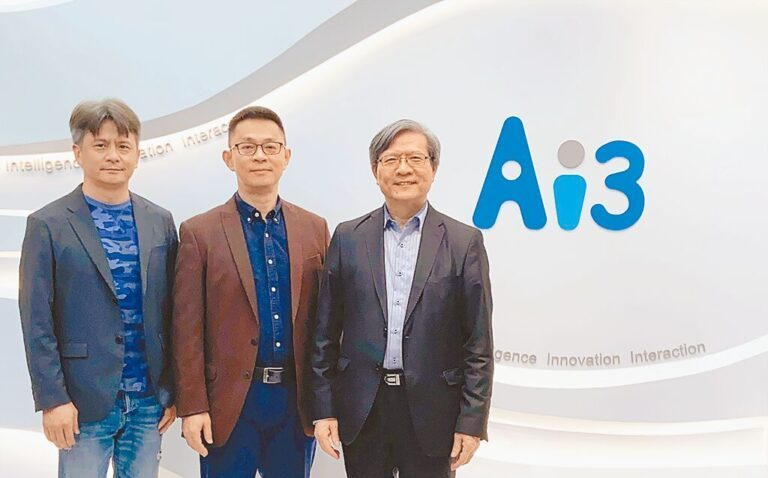
工商經營－Ai3智能客服 整合ChatGPT技術
國內最早投資 AI 聊天機器人開發的人工智能公司，整合 ChatGPT 技術
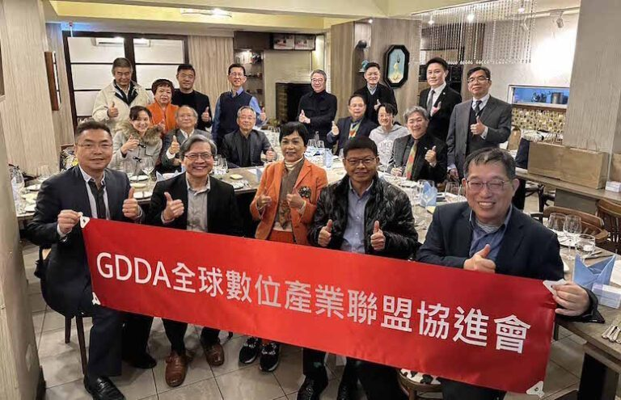
全球數位產業聯盟協進會(GDDA)理監事會
張榮貴董事長為第一屆 GDDA 理事
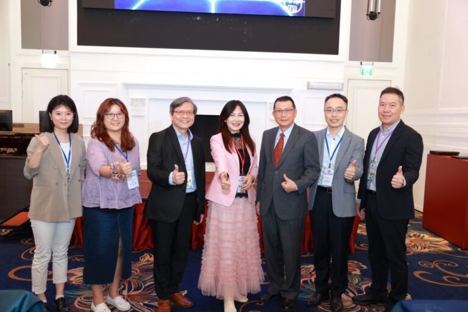
領袖研究院共同聯歡饗宴-Chat GPT的近期趨勢及未來發展
中華中小企業經營領袖協會【領袖研究院】分享 ChatGPT 趨勢
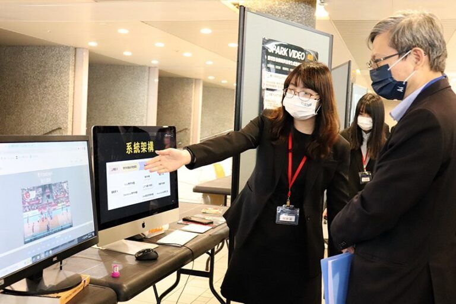
受邀參與長庚大學資工系演講與評審畢展作品
長庚大學資工系畢展，張榮貴董事長受邀評審學生作品
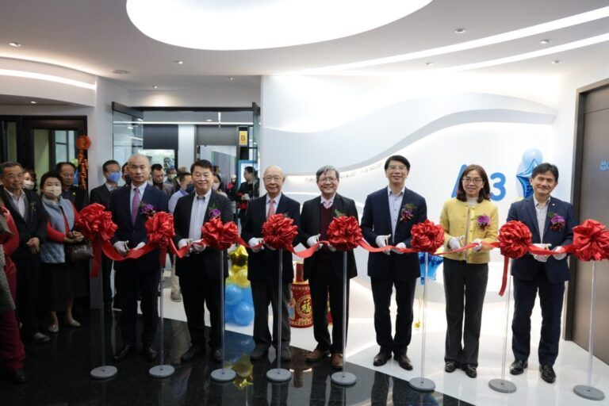
Ai3 co.喬遷感恩茶會
2 月 4 日正式喬遷到南港 Neo One 大樓，多達 200 家企業參與剪綵
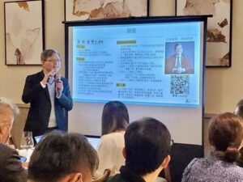
企業數位轉型中部CEO論壇經驗分享
張榮貴董事長受邀分享如何讓 AI 成為企業轉型的幫手

受邀《藍湖策略‧數位轉型》Podcast分享
張榮貴董事長在第 23 集分享 Ai3 專注的 AI 應用

數位轉型產學合作備忘錄簽署儀式
中華民國資訊軟體協會與亞洲大學簽署數位轉型產學合作備忘錄
內文已從 ai3.cloud 現站轉入本站第三層頁面；圖片仍引用現站圖檔。